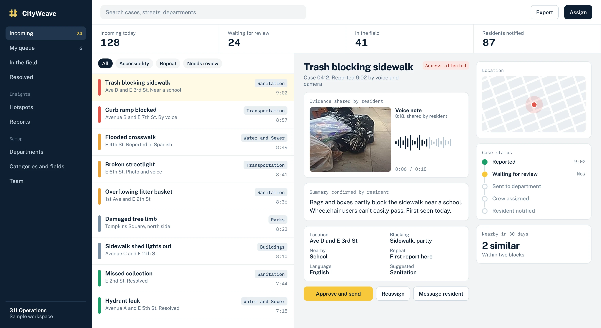
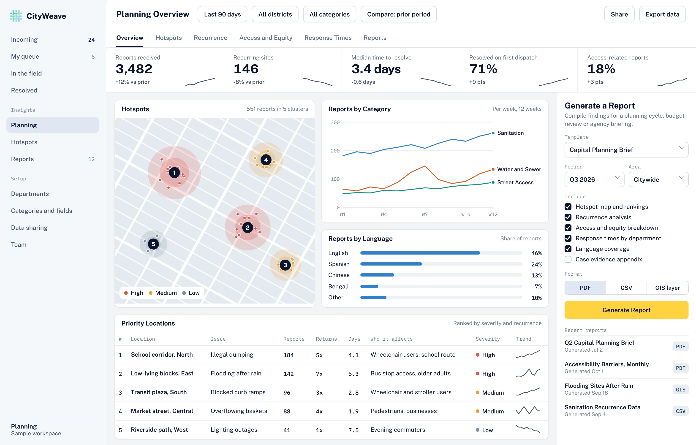

One Workflow, From First Report to Resolved Ticket
Book a ConsultationReporting
Show It. Say It. Confirm It.


Back Office
Every Ticket Arrives Ready to Work
Staff see what was shared, what was confirmed and where it stands, all in one place.

Sample data.
Planning
From Tickets to Hotspots to Plans
See where problems keep coming back and who they affect.

Sample data on an illustrative map.
How to Start
One Team, One Workflow
Start with a report type that's hard to describe and low risk to test.
Measure What Matters
Complete reports, right routing, less effort.
Grow From There
Add more categories, teams and departments.
Ready to Get Started?
Tell us about the workflow you would like to fix.